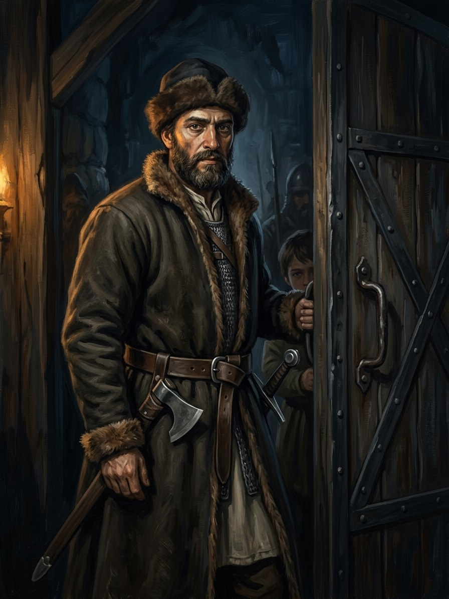

Elijas, son of Mošė (Karaim guard captain)¶
Summary¶
Elijas, son of Mošė, the Karaim captain of the Trakai guards (wife Rachelė), keeps the vault door; his younger son Zacharijas holds it in 1430; his elder son is Samuelis.
Elijas, son of Mošė (Karaim guard captain)

Elijas, son of Mošė (Karaim guard captain) · character¶
Tipas |
veikėjas |
Metai |
?–? |
Status |
Sagos išmonė |
Pastaba |
Karaim captain of the Trakai guards; stands at the vault door. His younger son holds the door in 1430. |
Appearance & tells¶
A tall man with a grey beard and dark, quiet eyes; a warrior, not a priest (Book II ch. 18; Book III ch. 28). He stands at the vault door the way a man stands who does not know he is entitled to sit (Book IV ch. 10). His rare smile „soft as a hand’s touch“. Tells: his wife Rachelė’s small lamp on a shelf, which the Karaims keep burning in every house; the copper lamp with a three-part wick he brought from Crimea, which his son Zacharijas keeps burning day and night when the hearths of Trakai die (Book V ch. 4).
Want · Need · Lie · Truth¶
Want (external) |
To settle his thirty families safely on Duke Vytautas’s land and keep their faith. |
Need (internal) |
To understand that a door can guard something even when it guards nothing. |
Lie they believe |
That a soldier need not explain what he sees on the road. |
Truth they learn (or refuse) |
That an empty door, held faithfully, is heavy: he never thought empty doors could be so heavy (Book III ch. 28). |
Arc by book¶
Book II (1397-98): arrives at Trakai with thirty Karaim families, sees the dust-pillar of the steppe-spirit crumble at the first pine wood („We are no longer his“); the Franciscan offers to baptise his children and is turned away with bread; the Grand Duchess Ona visits (ch. 18); in 1399 he lets Vytautas pass with the Vorskla cloak and asks nothing (ch. 29).
Book III (1410-11): stays behind at the empty vault when the lantern goes to Grunwald („Someone has to stand at a door with nothing behind it, so that someone can come back“, ch. 15); the lantern returns after eleven months (ch. 28).
Book IV (1418-1430): at the dinner with the new bride Julijona (ch. 10); his younger son commands Vytautas’s escort at the fall (ch. 25), and receives Jogaila (ch. 26); he himself is long in the Karaim cemetery by 1430 (ch. 29).
Book V: his sons Samuelis and Zacharijas; the copper lamp (ch. 4).
Power & magic¶
None; a mundane warrior. His own faith keeps a lamp, and the saga goes no further than that parallel (see the Book II outline). He is the witness of the vault, not its keeper: the Karaims are the Steppe-Hunger’s refugees, never its servants. He keeps the flame promise by silence, as keeper of the Last Flame promise at the vault door (1398-1411).
Record vs saga¶
[Historical record]: The Karaims settled at Trakai in 1397-98 (tradition; numbers disputed).
[The saga’s invention]: Elijas himself and his role at the vault door (Book II ch. 18, 29; Book III ch. 15, 28).
Tarimas¶
The Karaim original Eliyah is eh-lee-YAH. His father’s name is Mošė (MO-šė, „Moses“).
Appearances¶
Book II: ch. 18 (Trakų Naujakuriai), 29 and the afterword. Book III: ch. 15, 21 (a mention in a letter), 28. Book IV: ch. 10, 25 (his younger son), 26, 29, 30. Book V: ch. 4 (Užgesusios Krosnys). Book V ch. 4 says the Karaims came „from Crimea 33 years before Vytautas’s death“ (1397); the record’s tradition says 1397-98 and disputes the number of families (Book II afterword: about 300, Elijas’s thirty being one band).
Ryšiai
Keeps: The Last Flame promise (1398–1411) — Karaim captain at the vault door.
Parent of: Samuelis (Elijas’s elder son, Karaim) · Zacharijas (Elijas’s younger son, Karaim)
Sąsajos¶
graph LR
elijas["Elijas, son of Mošė (Karaim guard captain)"]
flame_promise["The Last Flame promise"]
samuelis["Samuelis (Elijas's elder son, Karaim)"]
zacharijas["Zacharijas (Elijas's younger son, Karaim)"]
elijas -->|Keeps| flame_promise
elijas -->|Parent of| zacharijas
elijas -->|Parent of| samuelis
style elijas stroke-width:3px